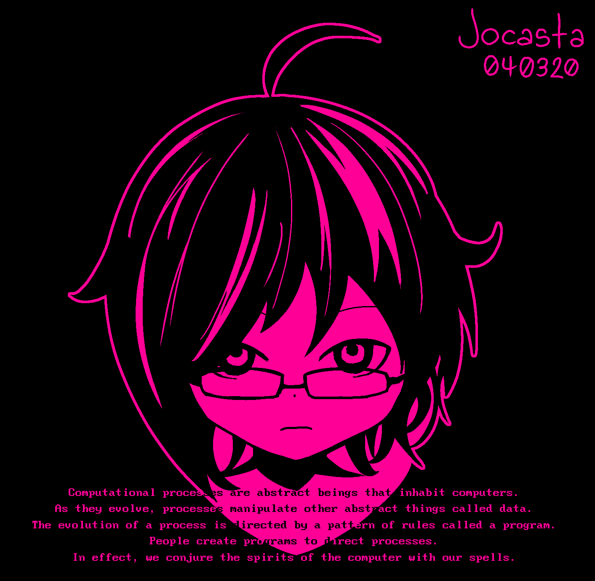
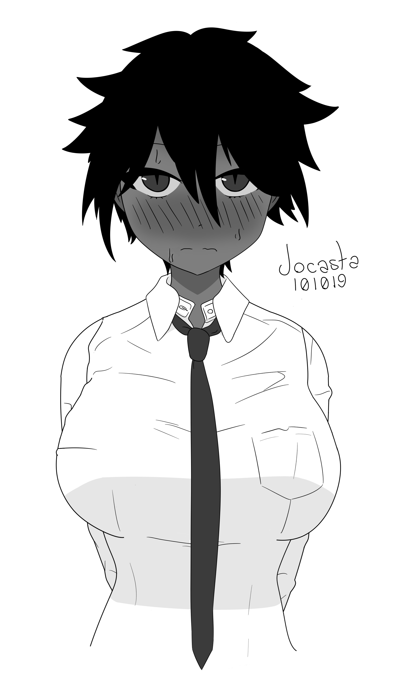
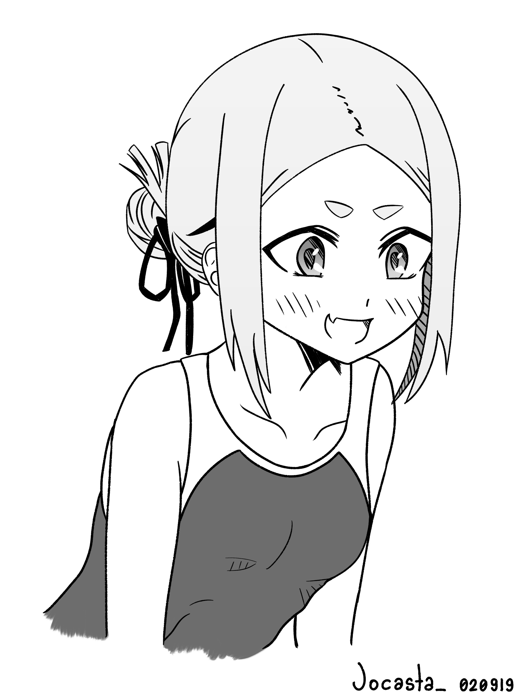
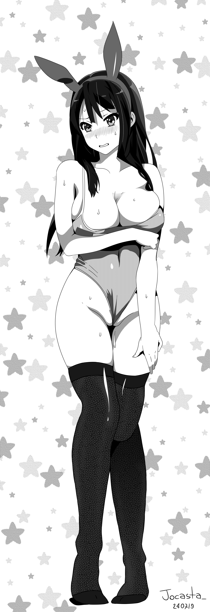
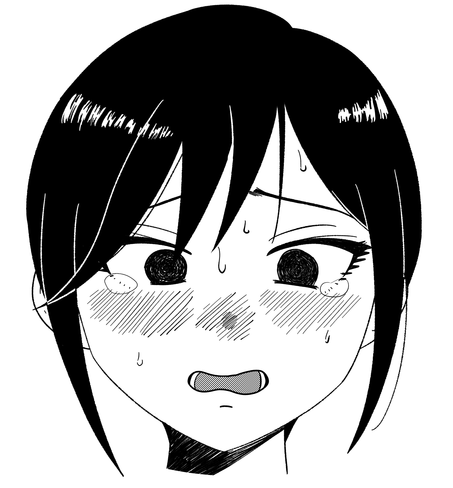

Gallery
I recently started drawing, and obviously I draw anime shit because I'm a disgusting degenerate weeb.
To be completely honest I'm not particularly passionate about it. I started drawing because I have like four graphic tablets laying around and it was kind of a waste to
use them only as gayming peripherials.
Click to enlarge (note that I didn't bother resizing them so they go up to like 6k~ pixels).
Also, I know this kind of layout is absolutely sub-optimal for browsing pictures,
but I'd rather use this than an interactive gallery built with j***script, sorry.
03/04/2020
I had the opportunity to get my hands on a big ass tablet with a display (for free :^) ) and this is the result.
I didn't really feel like drawing and I'm quite busy these days, so I tried to recall from memory a fanart
(actually I'm not even sure it was fanmade, it could've been official) of Kobaryo's mascot a saw a while ago.
I was in such a hurry that I didn't even use any kind of reference (and it shows), but I'm relatively happy with how it turned out.
Oh, I also bought a Clip Studio Licence, so this was also my first time trying it out. I'd say it's pretty comfy, even though I'm still used to Medibang's shortcuts.

10/10/2019
Tanned DEKAI tomboy. It's all fun ang games until you get to the wrinkles on the shirt, fuck that shit.
It's been more than two months since the last post, I've been really busy and it's only gonna get worse so I'm probably not gonna draw anything for a while.

02/08/2019
Chie-chan from 妹の友達が何考えてるのかわからない, straight from the pool chapter.
Fun shit, went through four Nanahira albums in the process, denpa is probably the most fitting BGM when drawing lolis.

26/07/2019
Some random YARIMAN, ispired by one of Satou Kuuki's doujins.
Trying to draw a passably reastic shadow under the boobs gave me a fucking headache.

24/07/2019
Reina from Hibike! Euphonium. Inspired by one of Takeda Hiromitsu's doujins.
I actually had a blast drawing this, except when texturing the hair, fuck that.

16/07/2019
Flustered Tsubaki (Arakure Ojousama wa Monmon Shiteiru).
Considering it's my first time taking my time to actually finish something I start I'm rather happy with how it turned out.
